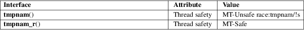

tmpnam, tmpnam_r − create a name for a temporary file
Standard C library (libc, −lc)
#include <stdio.h>
[[deprecated]]
char *tmpnam(char *s);
[[deprecated]] char *tmpnam_r(char
*s);
Feature Test Macro Requirements for glibc (see feature_test_macros(7)):
tmpnam_r()
Since glibc 2.19:
_DEFAULT_SOURCE
Up to and including glibc 2.19:
_BSD_SOURCE || _SVID_SOURCE
Note: avoid using these functions; use mkstemp(3) or tmpfile(3) instead.
The tmpnam() function returns a pointer to a string that is a valid filename, and such that a file with this name did not exist at some point in time, so that naive programmers may think it a suitable name for a temporary file. If the argument s is NULL, this name is generated in an internal static buffer and may be overwritten by the next call to tmpnam(). If s is not NULL, the name is copied to the character array (of length at least L_tmpnam) pointed to by s and the value s is returned in case of success.
The created pathname has a directory prefix P_tmpdir. (Both L_tmpnam and P_tmpdir are defined in <stdio.h>, just like the TMP_MAX mentioned below.)
The tmpnam_r() function performs the same task as tmpnam(), but returns NULL (to indicate an error) if s is NULL.
These functions return a pointer to a unique temporary filename, or NULL if a unique name cannot be generated.
No errors are defined.
For an explanation of the terms used in this section, see attributes(7).

tmpnam()
C11, POSIX.1-2008.
tmpnam_r()
None.
tmpnam()
SVr4, 4.3BSD, C89, POSIX.1-2001. Obsolete in POSIX.1-2008.
tmpnam_r()
Solaris.
The tmpnam() function generates a different string each time it is called, up to TMP_MAX times. If it is called more than TMP_MAX times, the behavior is implementation defined.
Although these functions generate names that are difficult to guess, it is nevertheless possible that between the time that the pathname is returned and the time that the program opens it, another program might create that pathname using open(2), or create it as a symbolic link. This can lead to security holes. To avoid such possibilities, use the open(2) O_EXCL flag to open the pathname. Or better yet, use mkstemp(3) or tmpfile(3).
Portable applications that use threads cannot call tmpnam() with a NULL argument if either _POSIX_THREADS or _POSIX_THREAD_SAFE_FUNCTIONS is defined.
Never use these functions. Use mkstemp(3) or tmpfile(3) instead.
mkstemp(3), mktemp(3), tempnam(3), tmpfile(3)